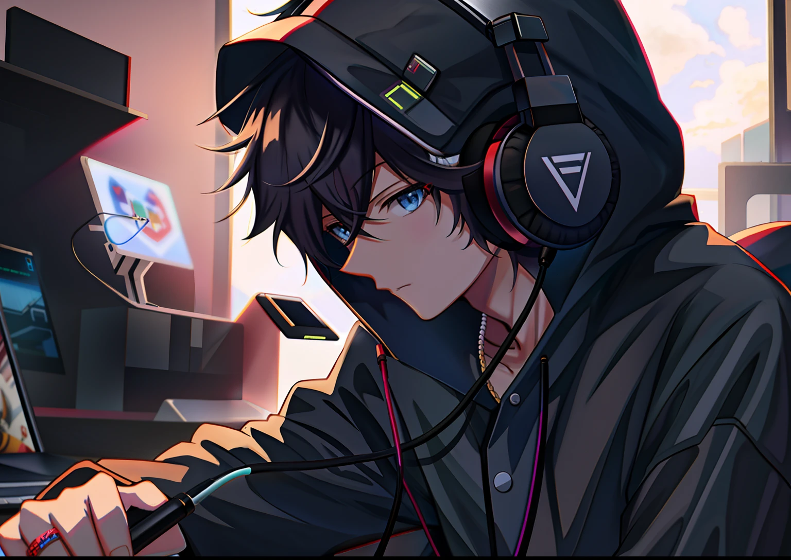
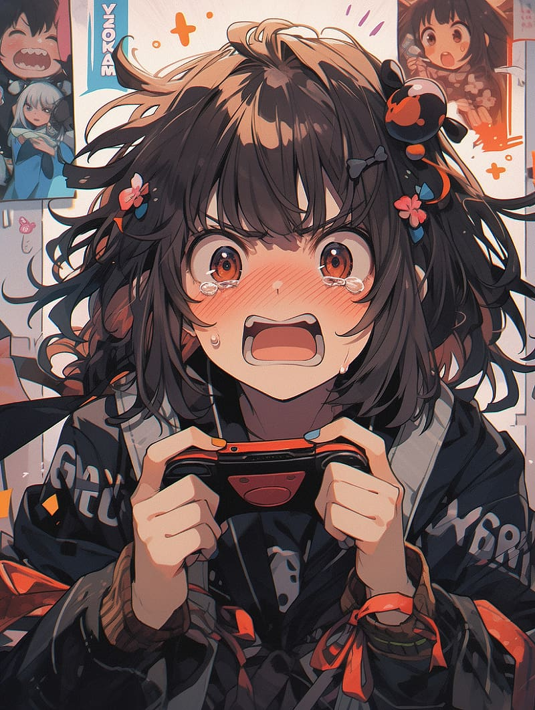

So everything starts like this. Red green and blue are three different
people. Red is a guy gamer who lost his both parents in a student protest
of 2024 at a very young age. He got nothing in life and he lives off by
playing tournaments or that's what he thought but he's running out of debt
and everything and also he can't pay the electricity bills from next
months. He found this gamer tournament that he tought he might win with
his skills so he gambaled his money and sold his pc and everything to go
to the even and started playing but lost. Green has a similer story. She
lost her parents recently but her brother threw her out of her house two
years and she had gamer skills but she also struggled with everything. She
carefully saved money to buy a house but she can't afford a good house
with this much money. She needs more money.
However blue has a different story. He's a normal town pun who likes to
cause problems or hack stuff. He's a hacker. He's entering this
competition for testing his hacking budget and he got 15th place thanks to
that but in reality he wouldn't even get to normal selection with his
level of talent. Both red and green lost their match so they were going
home being sad but blue asked both red and green to meet in his personal
van. Green reveals that he's a hacker and wants to wind an actual
chapionship and hack it. He wants to be a professional hacker. For that he
needs a team. Both red and green have similer baground good enough for
blue to work. He offers both of them good amount of money for entering
another tournament and help him hack their system cause if they do he'll
make sure they'll win.
They both start preparing and all and everyhting seems to be going well.
They went throw the place and stratigised and all. They went on missions
since they had one month. They tried hacking into the main system and they
failed. they tried a different route and went to lock into the inthernet
connection wired outside and succeded. Now they need to do the same from
the inside and they succeded to gather most of the info but they were
almost caught so they fleed with half of the info. It was only one week.
And this amount of info wasn't enough to win the contest. Even though blue
can give both red and green aimbot it'd be hard for them to use it without
practice so they practice it for the next week. While paractecing red and
green talked how they shared similer tastes and everything and turns out
green played some hentai games before the exact ones that red played and
she even bought one of the dresses that can be bought in real life. She
decided to wear it in front of red and they immidately go back to training
so blue won't notice how wierd their conversation was.
 They blue gave them a
special glasses that'll help them to see throw game walls cause blue
managed to design those glasses with such programings that'll conentrate
on the lightings on the game and remove any short of abstacle only leaving
the players. They'll also recieve secret buffs that blue is working on.
It's upto their final mission before the night of the gaming day. the
night comes and they managed to sneak in the place and insert some names
and all but blue got caught so he was disqualified. Red and green thought
they are done too but thanks to blue's plan they can still enter the
competetion. Blue was leaving that place after telling them that and red
and green felt bad for him and asked if he didn't wanted any share and
blue said he just wanted to hack something successfully.
 He needs to change his name
and everything now to not get caught in the future and also new partners
but if he ever feels like he needs good friends he'll be sure to call them
and leaves. Both green and red were sad for blue but they were glad to
meet blue. The night they spend together alone. Red and green. Red was
lonely so he came to green's room and spend the night together. They enter
the competetion and aim bot and everything stoops working midway due to
the anti virus or something. The competetion endsd with green getting at
3rd place and red loosing. Red thanked green and said he probapabally have
to quit everything now that he lost everything and green thought something
and told red that she got enough money to now buy another gaming set up.
Maybe they can naturally grow up and everything and help eachother just
like how they did.